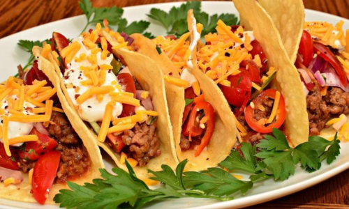

Bear Meat Tacos
Ingredients
- 1 lb bear meat, ground
- 1 package tortillas
- 1 head lettuce, chopped or shredded
- 2 tomatoes, chopped
- 1 onion, chopped
- 3 cloves garlic, minced
- 1 packet taco seasoning
- 1 avocado, sliced
- 1 lime, cut into wedges
- Fresh cilantro, chopped
Directions
- In a skillet, brown the bear meat over medium heat. Drain excess fat.
- Add the chopped onion and garlic, and cook until softened.
- Stir in the taco seasoning and a bit of water. Cook until the meat is well coated.
- Serve the meat in warmed tortillas.
- Top with lettuce, tomatoes, avocado, lime juice, and fresh cilantro.